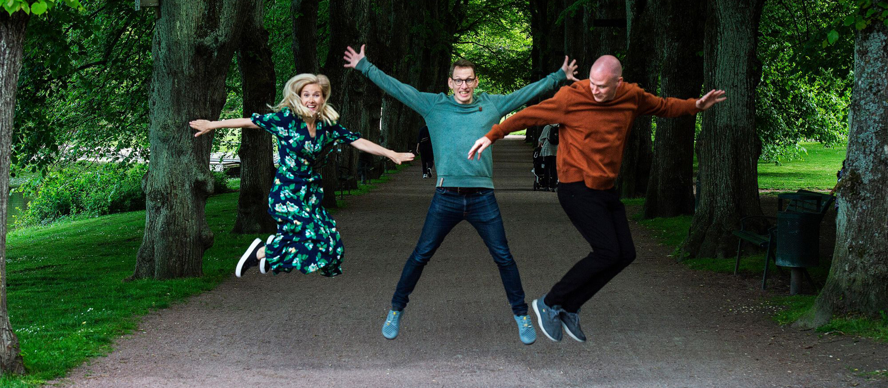
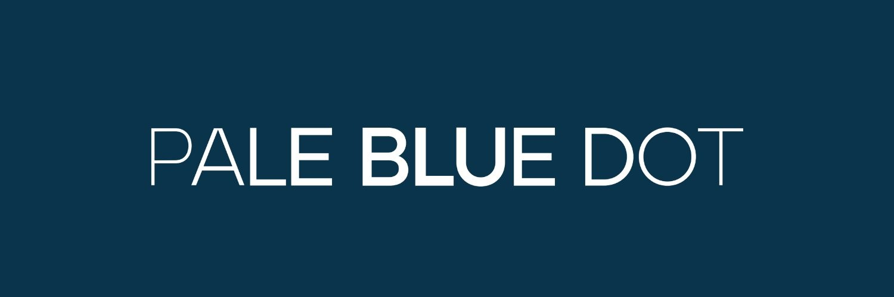
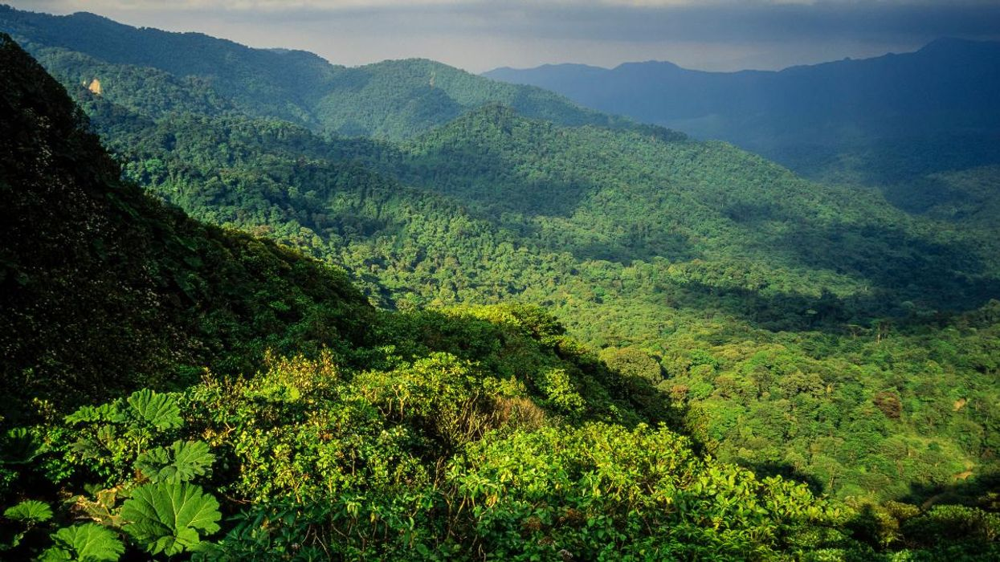
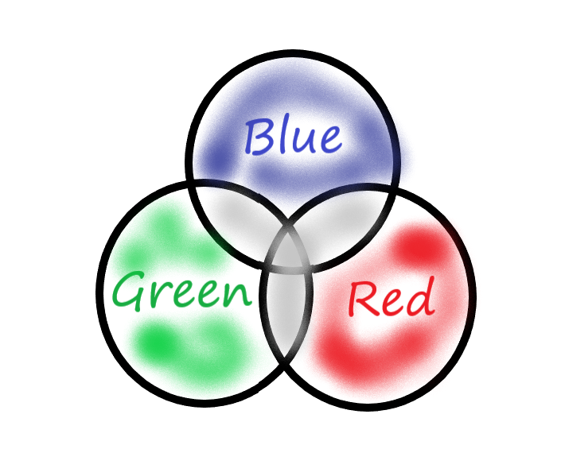

Larsen Mettler is Managing Director at S2G Ventures, a multi-stage venture fund investing in entrepreneurs that are improving the overall health and sustainability of the food system. In this edited conversation with Peter Green, Larsen spoke about his experience leading the Oceans and Seafood fund, for algae-tech products, the evolution of Pale Blue Dot and how he hopes for more innovation in supply chains.

S2G started in 2014 and focussed on climate health, human health and animal health. It was largely based on fostering disruptive technologies across terrestrial, food and agriculture supply chains.

The strategy was to invest broadly, starting at the base of food products and the food chain, things like investing in soil health, plant DNA for example. Over time, they started to see that the oceans and seafood space was a natural extension of what they were already doing in food and agriculture. They started to look at aquaculture specifically, and realised that it was different enough to merit having its own separately managed fund with separate goals, and industry experts focused on that space.

The oceans and seafood industries are viewed as being very nascent, both in economic as well as human capital terms. We're looking to develop the industry ourselves, but also catalyse the arrival of others and additional capital into the space. I previously worked as an investment banker in the corporate side of this space. In that role I noticed a number of investors who were interested in getting involved but who didn't know enough to actually act. Few would invest, and that was largely due to the sector's exposure to climate shifts, seasonal fluctuations, and cyclical fluctuations, factors which are outside of their control. We still see a number of investors sitting on the sidelines waiting for someone to take a leadership role.

Fortunately, we have seen a lot of funds pop up over the last year. Aqua-Spark, was the first one to come out and lead the charge, around 2015/2016. They paved the way for a lot of the early stage capital. Then we started seeing incubators coming on, and seeding a lot of these early early stage companies. Now we're seeing some growth into series A/Series B. We're also seeing platform technologies from other industries coming into seafood. People are really opening up their mind about precision farming, precision harvesting, and sustainability. They're borrowing technologies from the other industries, and they're de-risking the industry.
As that's happening, we're now seeing more players, both from the fund side and the corporate side, willing to invest if there's a lead fund taking that charge. We've seen several funds pop up over the last year, and I think they're starting to get pretty sizable. So we're seeing a lot of excitement around around the sector. It's at that stage where you're still seeing that that VC growth potential. The other component that's been interesting, is that the corporates are developing their venture capital as well. They're working side by side with the VCs and entrepreneurs. It's very exciting.
I think we're going to continue to see that grow a tremendous amount. People often compare it to space considering how largely unexplored it is. I think that as we put more satellites up, that's going to play a role in studynig the oceans as well. And it's gonna, it's gonna play a bunch of different roles.

The first one that I was thinking about was really studying the climate and understanding what was happening in the ocean. When I was on the corporate side looking at Wild harvester processing assets, we were a well managed company and well managed fishery, however, climate was playing a role that we didn't foresee. Things like increasing ocean acidity, rising water temperatures, and that has a huge impact on fish stocks. We kept seeing fish moving north and west, away from the United States. I think that's going to continue as the ocean continues to warm. We really need to understand what is causing all of these things.
I think it'll certainly lead to things that, you know, may or may not be good for the ocean and the earth in general. I think there's a number of companies out there, they're looking at deep sea mining, you know, is that going to be a good thing? I don't know. It could be they could extract rare earth minerals that aren't exposing things on the surface.
I think it'll help with placement of renewable energy, understanding waves and where the best places are to put turbines and things like that on the ocean. You know, we're looking at a company right now that's optimising shipping routes, by having smart buoys out there. So there's just a huge swath of information that's out there that's not being collected and people don't understand it. Two other things I think will be very impactful is just understanding on the climate side, you will probably have a better understanding and visibility around weather patterns. That'll affect things on the ocean as well as on land. And then also carbon capture. I think that's a big component too. It's a little bit of a mystery on how much blue carbon will play in the future. Including what are the efficient ways to actually trap carbon in the ocean? We're very excited about that and I know there's a couple of companies out there trying to measure and account for that today.
I think it's something that's vastly under studied and not well understood. There's going to be a huge unlocking of potential. A lot of people look at algae and think about macroalgae, which you can use to make make chips and burgers while regenerating ecosystems. I definitely agree with that but it's just the tip of the iceberg.The fact is that, all land plants came from sea plants. These are the building blocks of life. I think that there's tremendous potential for trapping carbon with it.
It will advance the alternative protein play , it's already taking a role in things like dyes, and extracts. I'm interested to see if someone will start looking to build a seed bank, for both macro and micro algae. It's important to take these plants, categorise them, study them understand what their full potential is, all the while locking away these core strains and keep them safer. We've gone down a few paths in this area. On the macro algae side, we did take a deep dive into asparagopsis, which is there kind of a methane reduction play. We think there's more work that needs to be done there. We will likely be investing in a micro-algae play that originally started as one of these functional proteins and ingredient plays but has pivoted towards just being carbon sequestration play.
It depends on what seiries we've invested in. we've started with everything from a seed series investment through a series B, at this point in our five investments. A common theme, specifically does seem to be product market fit,. Does the product that we are making or service, really have the ability to scale and will it be adopted by big players in a meaningful way. It has somewhat to do with the product or service itself. But it also has a lot to do with relationships, as well as telling the story,in an impactful way that will get people to sign off on it. we like to is sit down with the entrepreneurs. It's okay, if they pivot along the way and modify it to see how it will be be adopted well and make an impact. I would say that's probably the biggest challenge.

The second would be human capital, because these are such novel technologies and services and actions that they're taking that you can't just go out and get someone who has a tonne of experience in photo bio reactors and algae. There aren't a lot of people out there and you're building the plane as you fly it in a lot of these instances. as long as they have a beginner's mindset, they'll continue to be successful.
We'll be doing that carbon that micro algae carbon play. we should be closing that I think within a month, we will be doing a an ocean data and IoT play Where they've put a lot of buoys out in the ocean. They're measuring things like wave height, wind speed, currents. Starting with the acidity. their first product's already out there and it's generating revenue. it's like the Google maps of the ocean. So shipping companies can pull up the app, say where they want to go, you know, the captain can pull it up. And then I'll show them. This is the best route, given current weather patterns, things like that. This is how much gas you'll save this how much carbon you'll save by by taking this route. So it's really around efficiencies. I think we will probably do, one to two cellular protein plays this year. And then one plant based play by the end of the year is my guess.
I've gotten this advice from from one of my colleagues, Chuck Templeton, and I mention it with the entrepreneurs too, but it really is having a beginner's mind. Coming to every idea in every conversation with an open mind and thinking that this is possible. You know, there's some stuff out there that seems really crazy. Seems like it's not available, it's insurmountable. But there's a lot of smart people out there that are willing to take the challenge. And I think that, you know, they, they generally need some encouragement and some support. And as long as you surround yourself with the good people that are doing that work, and are, you have that same mindset are willing to put in the time and effort to do it, I think you you can be successful there.

I've kind of got a random set of books. The alchemists sitting there. Yeah. I think down on my, on my nightstand, I have outlaw ocean. I have eat like a fish and Atlas shrugs So i'd recommend those.
"How to Avoid a Climate Disaster"